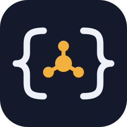

ahub
Run a configured AI agent from the command line, without prompts, with the conversation stored in bkn.

Early project, with known safety gaps. Do not give an agent the
cmd tool on a machine or data you care about: it limits arguments to what you list, but it is not a sandbox. Limits.# save the configuration once $ ahub agent create --name helper --model mistral-small-latest \ --system "You answer in one paragraph." # each turn is one command; the answer is JSON $ ahub chat --agent helper --message "what changed in the repo today?" {"ok":true,"thread":"01M2...","content":"...","usage":{...}}
What's inside
Made to be scripted
stdout is data, stderr is context, and the exit code says what to do next.Stored threads
The question is saved before the model is called, so a timeout costs the answer and not the question.Readable context
Memories and skills from memgraph, as text. No vector store.Flows
Designed, step-by-step paths where only theaskstep calls a model.Schedules
Unattended runs that carry one bounded note forward instead of a growing history.Evals and budgets
Score a change to an agent, and refuse a new turn once the daily token budget is spent.
Limits
The goal is agent runs you can leave unattended. It is not met yet.
- The
cmdtool limits arguments to your patterns, but it is not a sandbox: commands run with your rights and can read what you can. - Some concurrency and crash cases are suspected from reading the code and not yet resolved.
- Many parts have no unit tests yet.
- Commands and timeouts have been tested on Linux only.
Get started
You need Go, a running bkn instance, and an OpenAI-compatible model endpoint. Memory, skills and the memory tools also need memgraph.
$ go build -o bin/ahub . && ./bin/ahub install
$ ahub setup --admin-token "$BKN_ADMIN_TOKEN" # once, by a human
$ ahub login --email you@example.com --password ...
$ ahub config set --provider-url https://api.mistral.ai/v1 --provider-key "$MISTRAL_KEY"
ahub guide explains the model; ahub help-json lists the commands.